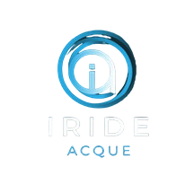
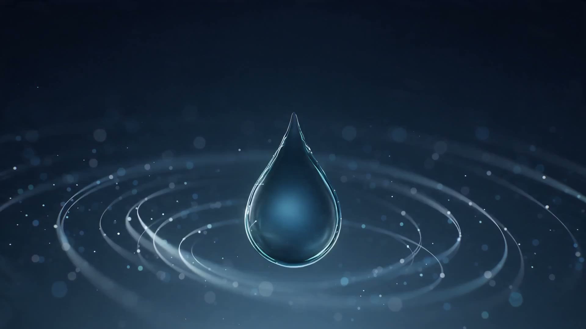
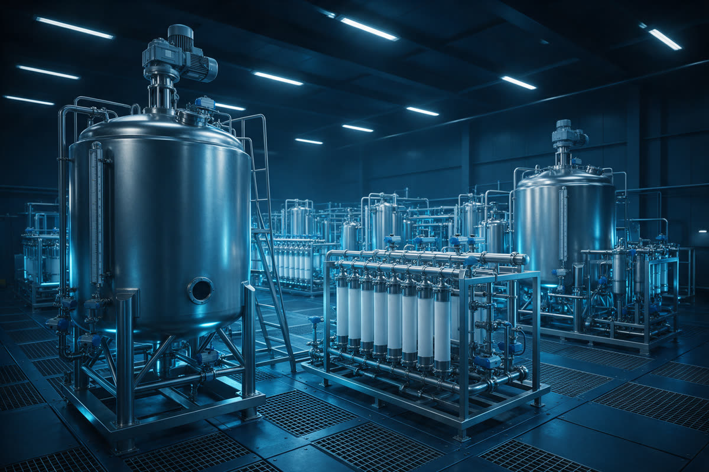
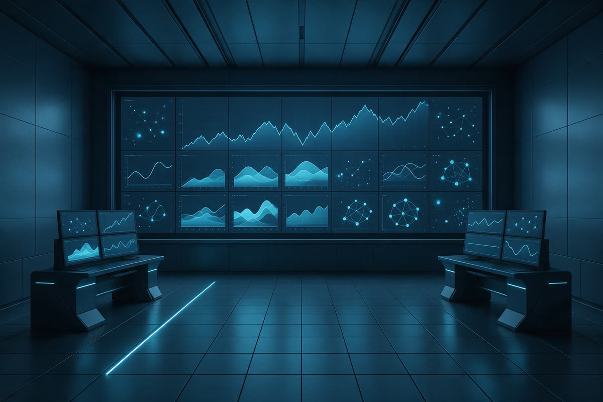

Soluzioni su misura per ogni esigenza.
Tecnologie innovative e massima affidabilità.
Manutenzione e assistenza continua.
Efficienza dei consumi, monitoraggio delle performance e dati per il bilancio di sostenibilità.
Il Gruppo Iride Acque è specializzato nella progettazione, costruzione e gestione di impianti per il trattamento delle acque industriali e civili. Attraverso un modello integrato supporta aziende, gestori del Servizio Idrico Integrato ed enti pubblici lungo l'intero ciclo di vita degli impianti.
Grazie alle competenze complementari delle Società del Gruppo, il cliente può contare su un unico interlocutore per affrontare diverse esigenze: depurazione, potabilizzazione, trattamento e riutilizzo delle acque di processo, revamping e gestione operativa O&M.
La gestione delle acque industriali e civili richiede competenze specialistiche che spaziano dall'ingegneria di processo alla costruzione degli impianti, dalla gestione operativa alla conformità normativa. Quando queste attività vengono affidate a fornitori diversi, possono aumentare la complessità organizzativa, i tempi di coordinamento e il rischio di dispersione delle responsabilità.
Il Gruppo Iride Acque supera questo modello attraverso una piattaforma industriale integrata che riunisce competenze ingegneristiche, operative e costruttive in un unico sistema di gestione. Questo approccio consente di coordinare progettazione, costruzione, avviamento, conduzione, manutenzione e monitoraggio dell'impianto con l'obiettivo di ottimizzare tempi, costi, affidabilità e performance durante tutto il ciclo di vita.
Il Gruppo Iride Acque presidia l'intera filiera del trattamento delle acque grazie alle competenze complementari di Iride Acque, BM Engineering e Bieffe Costruzioni. Dalla caratterizzazione iniziale del refluo fino alla messa in esercizio e alla gestione operativa dell'impianto, il cliente può contare su un unico partner responsabile del risultato complessivo.
Ogni impianto di trattamento delle acque deve essere progettato in funzione delle condizioni reali di esercizio. Portate medie e di picco, composizione chimico-fisica dei reflui, concentrazione degli inquinanti, variabilità del carico, limiti autorizzativi, disponibilità di spazio, consumi energetici e obiettivi di recupero dell'acqua sono alcuni dei parametri che influenzano il dimensionamento e la scelta delle tecnologie. Per questo il Gruppo sviluppa soluzioni personalizzate per il trattamento delle acque industriali e civili, evitando configurazioni standardizzate che potrebbero compromettere efficienza, affidabilità o sostenibilità economica.
L'obiettivo è realizzare impianti affidabili, sostenibili e in grado di mantenere prestazioni elevate nel tempo, riducendo al contempo consumi, costi operativi e rischi di fermo.
In funzione delle caratteristiche del refluo e dell'obiettivo di trattamento, il Gruppo integra differenti tecnologie e processi. Le soluzioni possono includere, a seconda dell'applicazione: trattamenti biologici, trattamenti chimico-fisici, chiarificazione e filtrazione, sistemi a membrana, ultrafiltrazione, osmosi inversa, disinfezione, recupero e riuso delle acque di processo, soluzioni Zero Liquid Discharge (ZLD) per la riduzione o eliminazione degli scarichi liquidi. L'approccio tecnologico viene definito caso per caso con l'obiettivo di ottenere il miglior equilibrio tra efficienza di trattamento, continuità operativa e sostenibilità economica.
La continuità produttiva di un impianto dipende dalla capacità di controllare i processi, individuare tempestivamente eventuali anomalie e intervenire rapidamente in caso di criticità. Per questo il Gruppo affianca ai propri clienti servizi di gestione e manutenzione O&M per impianti di depurazione, potabilizzazione e trattamento delle acque di processo. La gestione operativa comprende conduzione, manutenzione, monitoraggio dei parametri di processo, assistenza tecnica e supporto alla conformità normativa.
Grazie a questo approccio è possibile ridurre il rischio di fermate impiantistiche, aumentare l'affidabilità dell'impianto e mantenere sotto controllo consumi, prestazioni e costi di gestione.
La gestione integrata del ciclo idrico consiste nel coordinare progettazione, costruzione, conduzione, manutenzione e monitoraggio dell'impianto attraverso un unico modello operativo. Questo approccio consente di ridurre le discontinuità tra le diverse fasi del progetto e di prendere decisioni tecniche considerando fin dall'inizio anche gli effetti sui costi di esercizio e sulle prestazioni future.
La capacità del Gruppo Iride Acque si misura attraverso i risultati ottenuti sul campo, la continuità operativa garantita ai clienti e il know-how sviluppato nella progettazione, costruzione e gestione di impianti per il trattamento delle acque.
Tre competenze specialistiche, complementari, integrate in un'unica piattaforma industriale.
Analisi, progettazione e realizzazione impiantistica per il trattamento delle acque industriali e civili.
Scopri Iride AcqueCostruzione impiantistica, automazione elettrostrumentale, service O&M e impianti mobili modulari.
Scopri Biemme EngineeringRealizzazione di infrastrutture idriche e opere civili per multiutility, SII ed enti pubblici.
Scopri Bieffe Costruzioni
Recupero acque di processo, trattamento reflui complessi, abbattimento fanghi, impianti a Scarico Zero (ZLD): soluzioni ingegnerizzate per la riduzione di OPEX e il rispetto dei limiti autorizzativi.
Scopri le soluzioni per il settore industriale →Potabilizzazione, depurazione reflui urbani, riuso irriguo, tutela dei corpi idrici recettori: supporto tecnico ai gestori del SII e agli enti pubblici in materia di compliance autorizzativa.
Scopri le soluzioni per il civile →
Ingegneria di processo, costruzione impianti, noleggio impianti mobili modulari, service O&M, consulenza ambientale e permitting: un'unica piattaforma per l'intero ciclo di vita dell'impianto.
Scopri i servizi del Gruppo →Descrivi il tuo contesto tecnico-produttivo: un ingegnere di processo del Gruppo prenderà in carico la richiesta e ti ricontatterà per un primo confronto tecnico.
Un ingegnere di processo del Gruppo prende in carico la richiesta.
Segue un colloquio tecnico preliminare, senza alcun impegno, per approfondire contesto e obiettivi.
Ove utile, viene proposto un sopralluogo tecnico per il rilievo diretto delle condizioni impiantistiche.